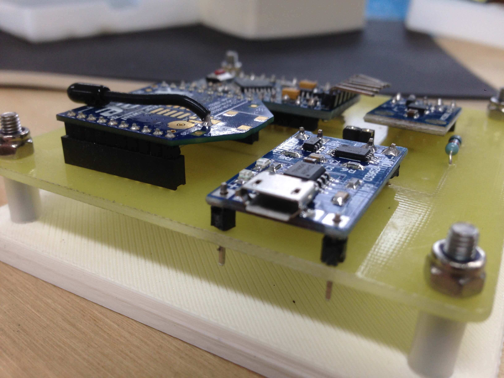

OCTAVIUS
Musical performance platform
05/16 | concept | product | development
Check out Oliver Stirling perform with OCTAVIUS here.
OCTAVIUS uses new technology to explore basic interactions. My goal was to create an open, non-restricted experience with sound. It uses basic interactions that musicians are familiar with to offer a different, expressive evaluation of the sounds they create.
Using mesh networking and sensors, the system creates a wireless and tangible experience. Each of the eight blocks can be rotated independently to manipulate effects and parameters using the MIDI and OSC protocols. They uses orientation to modulate parameters, whilst each pad can trigger sounds or events.
Each element of this project was developed and refined in a Maker Space utilising any and all technology to achieve completion. Each part is customised using PCB etching, moulding, 3d printing, coding and software / UI development. Each block can communicate around 10m from the each other, giving a total 100m² playing space. This offers collaborative experiences.
Using software built in MAX, OCTAVIUS can change different instruments seamlessly on the fly. With assignable orientation parameters for each device. The platform speaks OSC and MIDI, and can be connected to most software and hardware devices.
PAGES for OCTAVIUS acts as a daemon-type middle man software, dealing with data and routing.